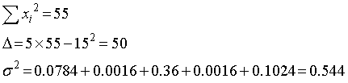
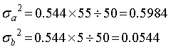
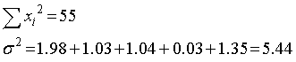
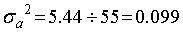

直線近似の場合の誤差の推定の検証（その１）
まずは適当なデータセットを用意します．
| x | y |
| 1 | 3.0 |
| 2 | 4.2 |
| 3 | 5.8 |
| 4 | 6.2 |
| 5 | 6.8 |
エクセルでグラフを作成すると，
と切片あり，なしでの近似式を導き出すことができます．
では，このパラメータの誤差はどうなるでしょう？
切片あり
それぞれのパラメータの誤差は，

となります．x2を求めると，
| x | y | x2 | xy | fit | (fit-y)2 |
| 1 | 3.0 | 1 | 3.0 | 3.28 | 0.0784 |
| 2 | 4.2 | 4 | 8.4 | 4.24 | 0.0016 |
| 3 | 5.8 | 9 | 17.4 | 5.20 | 0.36 |
| 4 | 6.2 | 16 | 24.8 | 6.16 | 0.0016 |
| 5 | 6.8 | 25 | 34.0 | 7.12 | 0.1024 |
| 15 | 26.0 | 55 | 87.6 | 0.544 |
です．一番下の行は総和です．

と計算できるので，

と計算できます．
切片なし
パラメータの誤差は，

となります．x2を求めると，
| x | y | x2 | xy | fit | (fit-y)2 |
| 1 | 3.0 | 1 | 3.0 | 1.59 | 1.98 |
| 2 | 4.2 | 4 | 8.4 | 3.19 | 1.03 |
| 3 | 5.8 | 9 | 17.4 | 4.78 | 1.04 |
| 4 | 6.2 | 16 | 24.8 | 6.37 | 0.03 |
| 5 | 6.8 | 25 | 34.0 | 7.96 | 1.35 |
| 15 | 26.0 | 55 | 87.6 | 5.44 |
です．一番下の行は総和です．

ですので，

となります．
では，この結果が，正しいかを検証しましょう．